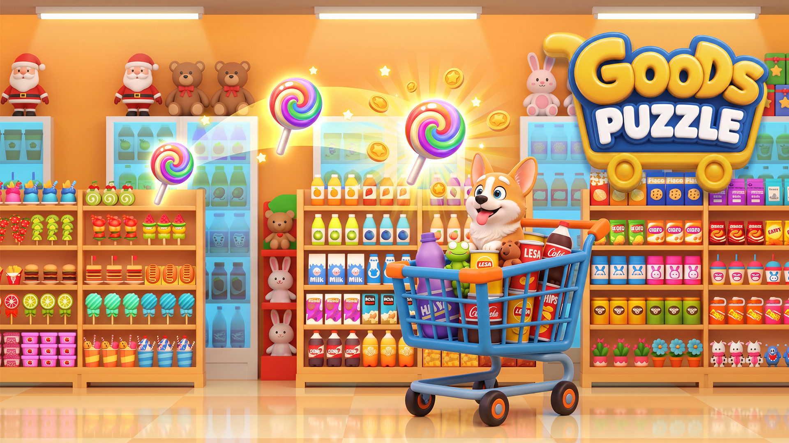
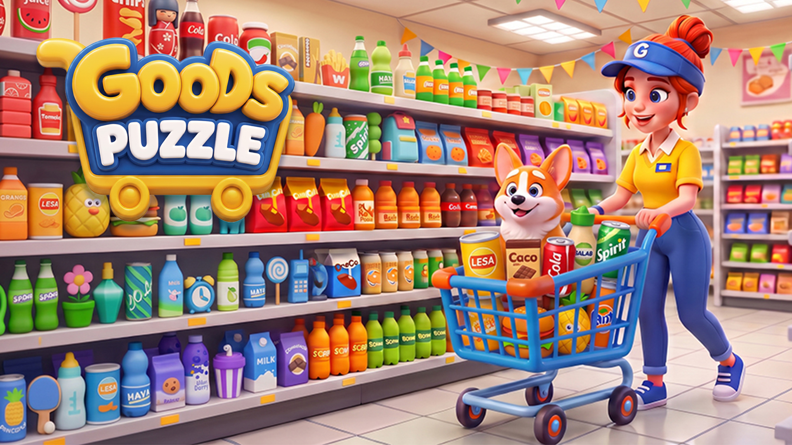

Goods
Puzzle 3D
A multi-direction visual program for store presence and overseas marketing: main visual systems, animated storefront graphics and a market-specific summer-festival expression for Japan.
Visual DesignerScope
Store & UAFocus
Localization

Store presence for overseas audiences.
Playful supermarket scenes translate the sorting premise into an instantly recognizable visual. Shelves, products, gameplay gestures and brand elements work together to make the core interaction clear before a player reads any detailed copy.

Motion turns the shelf into a story.
Animated assets explore varied collection themes while keeping the same interaction cue: a tactile gesture, a shelf to organize and an immediately understandable sorting reward. Each GIF remains an adaptable, stand-alone storefront unit.


Localization is a visual context shift.
For the Japan summer-festival direction, the visual language changes beyond text: festival game booths, lantern-light color, food-stall details and familiar seasonal objects reshape the same gameplay promise into a locally resonant scene.